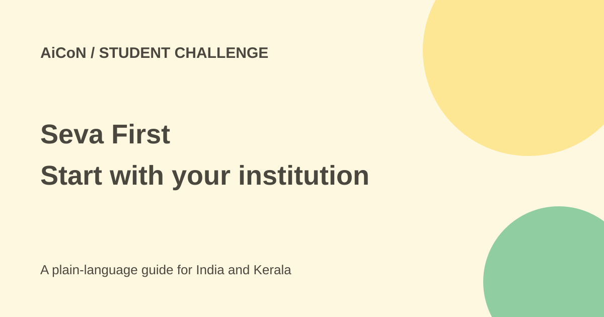

Seva First: students enter through their institution
Seva First invites student ideas for practical community problems. Students cannot register directly: the official portal says a nominated institution coordinator registers and nominates entries.

What is Seva First?
The Seva First Innovation Challenge is a national platform for young innovators to develop practical solutions to local and national problems. Its official portal emphasises feasibility, impact and implementation, with mentoring and support for promising work.
Participation is institution-led. The listed groups include schools, ITIs, polytechnics, colleges and universities in participating regions. A student interested in entering should first find the nominated coordinator at their institution rather than assuming there is a direct individual signup.
Who can enter and what is expected?
The portal describes three levels: Junior for school students up to Class XII, Technical for ITI and polytechnic students, and Open for undergraduates and above, including postgraduates and research scholars.
Junior entries need a clearly observed local problem and a simple working solution or well-reasoned idea; a prototype is encouraged but not mandatory. Technical entries need a working prototype for the technology track or a costed, field-tested delivery model for the governance track. Open entries need a demonstrated prototype or pilot and a credible path to deployment.
Two tracks and five themes
Track A is Product & Technology, including deployable devices, software, materials and engineering solutions. Track B is Business Model & Governance, including service delivery, financing, institutional and process models. The portal says both have equal standing, and an entry may combine them.
The five themes cover a clean and sustainable Bharat, prosperous farmers, health and inclusion, education and skills, and security. Choose a real problem first, then explain how the solution fits the relevant theme. An impressive AI demo without evidence of a useful outcome is not a complete project.
How to prepare an entry
- Ask your school or college who is coordinating Seva First and which institution entry rules apply.
- Describe a specific problem and the people affected. Collect evidence with their consent rather than exposing private records.
- Select the participation level, theme and track with the coordinator.
- Prepare the expected prototype, pilot or delivery model. Explain cost, feasibility, beneficiaries and how you tested it.
- Make clear what the team built and what outside tools or existing work it uses. Keep evidence of tests and results.
- Have the coordinator verify the institution's portal registration and nomination process. Review the final submission before it is filed.
- Check current portal notices for the deadline and later selection requirements.
The FAQ says the coordinator registers institution type, institute ID such as UDISE or AISHE, location and coordinator details. Activation uses a code sent to the official email. This describes the coordinator's workflow, not permission for a student to use another person's institutional account.
Deadline and conflicting finale details
The portal consistently gives the submission window as 25 September to 24 October 2026. Confirm any subsequent notice with the coordinator before filing. State screening is listed from 25 October onward.
Finale information is not consistent. The timeline gives exhibition, showcase and finale dates of 30 November to 15 December 2026. The FAQ instead names IISc Bengaluru and 10 to 17 December. The earlier post's New Delhi location is not supported by the checked page. Do not book travel from this guide; wait for a confirmed organiser notice.
The displayed prize amounts are ₹10 lakh, ₹5 lakh and ₹3 lakh, but the page describes their scope differently: one section says each category and the FAQ says each theme. These are not interchangeable. Ask the organisers which award structure applies rather than counting a guaranteed prize for your entry.
For Kerala institutions
A Kerala campus team could investigate a local accessibility, farming, waste or education problem, but it should test the need with the people affected. Explain who will maintain the project and its running costs after the demonstration.
No entry or payment was submitted while preparing this guide. The checked source did not establish one universal total participation cost. Ask about later travel, materials and exhibition requirements before committing to them.
What changed since the original post?
The 30 September post presented an open opportunity but gave New Delhi finale details. This guide makes the institution-led route explicit and preserves the official page's conflicts about finale dates, venue and prize scope. The coordinator should use current organiser notices for those decisions.
Frequently asked questions
Can a student register directly?
No. The FAQ says participation is through a nominated institution coordinator.
Is a prototype always required?
Requirements differ by level and track. Junior entries can be well-reasoned ideas; higher levels require stronger demonstrated work.
Are finale travel dates settled?
Not by the checked page. Its timeline and FAQ disagree.
Does selection guarantee funding or a prize?
No. Evaluation and later award decisions remain separate.
Sources: Official portal and FAQ. Checked 7 October 2026.